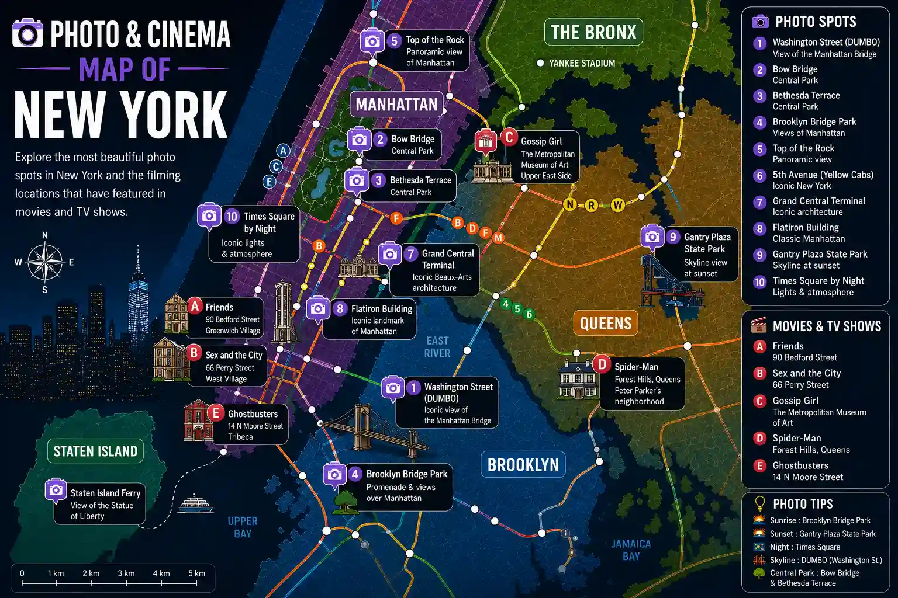

Iconic view of the Manhattan Bridge with the Empire State Building in the background.
One of the most photogenic bridges in Central Park.
An iconic architectural landmark in the heart of Central Park.
Exceptional panoramic views over Manhattan.
One of the best viewpoints of the New York skyline.
90 Bedford Street — Greenwich Village.
66 Perry Street — West Village.
The Metropolitan Museum of Art.
Forest Hills, Queens.
14 N Moore Street, Tribeca.